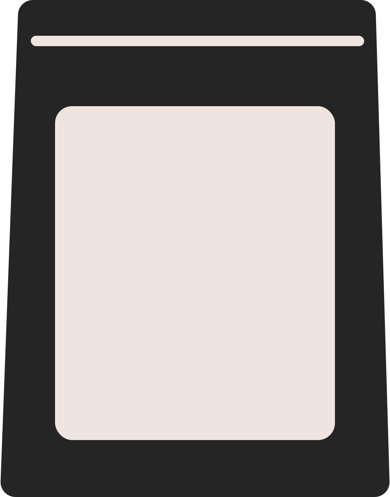

История

Шрифт был создан дизайнером Фридрихом Альтхаузеном во время учебы в Баухаусе в 2005 году.
Vollkorn был порожден желанием найти шрифт, сочетающий в себе современность и традицию.
«цельнозерновой» c немецкого.
Название отсылает ко временам “хлебных” или “хлебоподобных” шрифтов, использовавшихся в ежедневной печати.